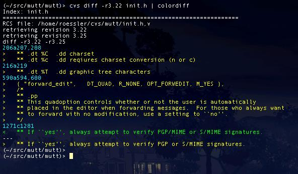
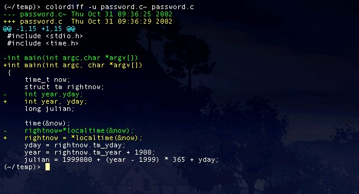

Screenshots
The following screenshots were taken using colordiff in a transparent Eterm. The first shows the results of piping the output from another task (a 'cvs diff' from the Mutt development tree) through colordiff:
The next screenshot shows the use of colordiff as a replacement for diff - see that options passed to colordiff are passed through to diff:
The final screenshot shows that by aliasing diff to call colordiff directly, the usual diff command can be issued resulting in coloured output:
colordiff is GPL licensed, (C)2002-2012 Dave Ewart, davee@sungate.co.uk